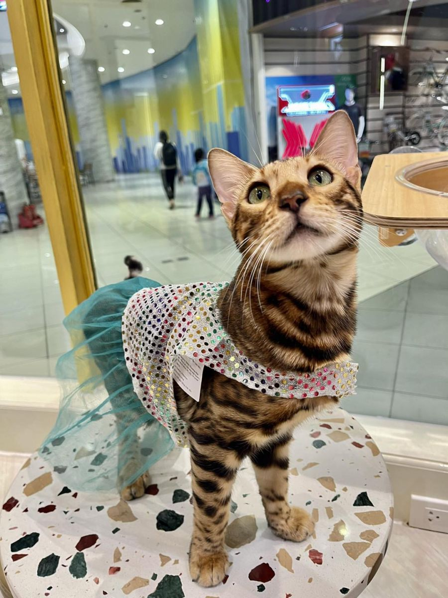
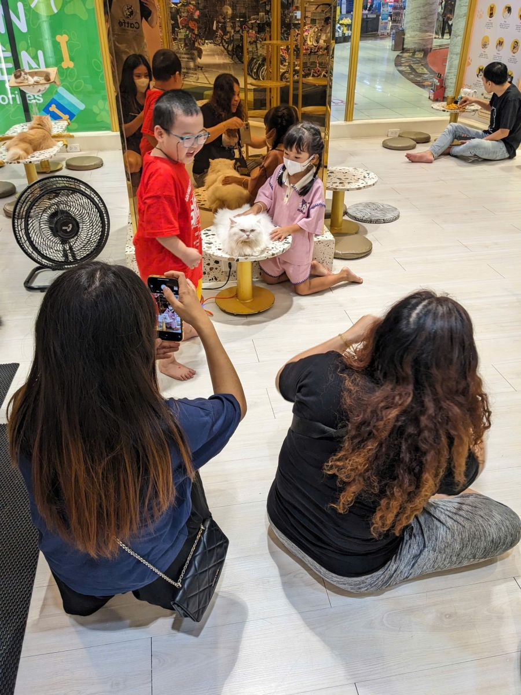

∞01
Chơi cùng mèo,
không nhìn đồng hồ.
Vé không giới hạn thời gian trong giờ hoạt động. Bạn có thể ở lại đến khi buổi hẹn với mèo thật trọn vẹn.
MỘT CHÚT SÀI GÒN. RẤT NHIỀU MÈO.
Một chiếc ghế êm. Một bé mèo vừa đi ngang. Và cả buổi thảnh thơi để làm quen — chẳng cần nhìn đồng hồ.

MỘT CHIẾC VÉ. MỘT BUỔI THẬT THẢNH THƠI.
Ngồi lâu thêm một chút. Đợi một bé mèo bước lại gần. Những điều dễ thương có nhịp riêng của chúng.
Vé không giới hạn thời gian trong giờ hoạt động. Bạn có thể ở lại đến khi buổi hẹn với mèo thật trọn vẹn.
Đồ ăn vặt và nước uống đã gồm trong vé. Tự chọn món mình thích, tìm một góc ngồi và tận hưởng.
Màu vòng cổ giúp bạn nhận biết nhóm tuổi và những bé cần được tiếp cận nhẹ nhàng hơn.
Đọc ngôn ngữ vòng cổNHÂN VẬT CHÍNH CỦA BUỔI HẸN
Một ánh mắt tò mò, một bộ đồ ngộ nghĩnh, một khoảnh khắc thật gần. Ảnh từ chính ngôi nhà CATFE.
Dola thân thiện. Alice thích ngủ. Goblin ham chơi. Mỗi bé một tính, mỗi lần ghé một niềm vui.
THIÊN ĐƯỜNG LÀ KHI MÈO CŨNG THẤY VUI
Có bé muốn chơi. Có bé cần ngủ. CATFE dùng màu vòng cổ để bạn hiểu các bé hơn, từ lần đầu gặp gỡ.
Với những bé mèo lớn tuổi, CATFE duy trì việc chăm sóc đến cuối đời. Một mái nhà không kết thúc khi các bé thôi tinh nghịch.
Chạm một màu để làm quen đúng cách.
Để bé chủ động đến gần. Không đuổi bắt và không cho bé ăn đồ của người.
CHỌN MỘT NHÀ. HẸN MỘT BUỔI.
Ba ngôi nhà tại Sài Gòn. Chọn nơi thuận tiện, xem vé và nhắn CATFE trước khi ghé.
Chi nhánh Quận 1 đã đóng từ 01/03/2026. Hẹn gặp bạn tại ba chi nhánh trên nhé.
Tầng trệt, cổng L2, khu PETEMO, AEON MALL Tân Phú.
Áp dụng tất cả các ngày trong tuần.
Giá và giờ theo thông tin CATFE công bố. Nhắn quán để xác nhận trước chuyến đi, đặc biệt vào lễ, Tết.

Tới chơi. Rồi thấy thân.LẦN ĐẦU GHÉ NHÀ
Chọn chi nhánh bạn muốn ghé. Nhắn quán nếu đi theo nhóm hoặc có yêu cầu riêng.
Nhân viên giúp bạn làm quen với không gian, buffet và quy tắc tương tác với mèo.
Rửa tay, chọn góc ngồi và để các bé chủ động làm quen. Không vội, mình có cả buổi mà.
Vé bao gồm vào khu mèo, buffet đồ ăn vặt và nước uống, cùng thời gian ở lại không giới hạn trong giờ hoạt động.
Bạn có thể nhắn CATFE để hỏi tình trạng chỗ ngồi, nhất là cuối tuần hoặc khi đi theo nhóm. Quán xác nhận trực tiếp qua Facebook hoặc Zalo.
Hãy hỏi nhân viên và xem màu vòng cổ trước. Không bế khi bé đang ngủ, ăn, ẩn nấp hoặc chưa thoải mái. Không cho mèo ăn đồ của người.
Nhắn chi nhánh trước để được hướng dẫn phù hợp. Trẻ nhỏ cần người lớn giám sát; mèo của khách cần đáp ứng quy định sức khỏe của quán.
Gửi CATFE chi nhánh, ngày dự kiến và số người. Quán sẽ trao đổi khả năng sắp xếp, mức giá và yêu cầu cụ thể trước khi xác nhận.
BỚT MỘT CHÚT VỘI. THÊM MỘT CHÚT MÈO.